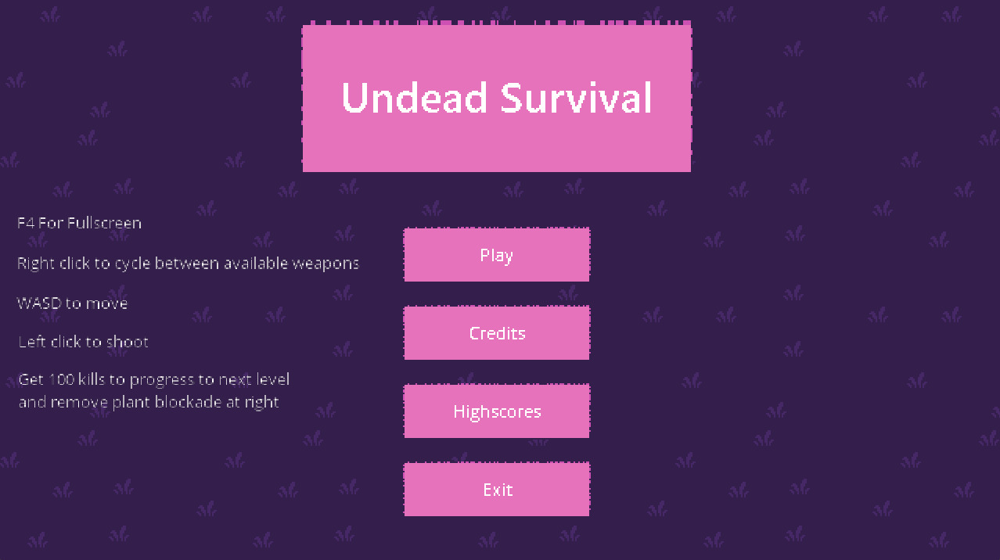
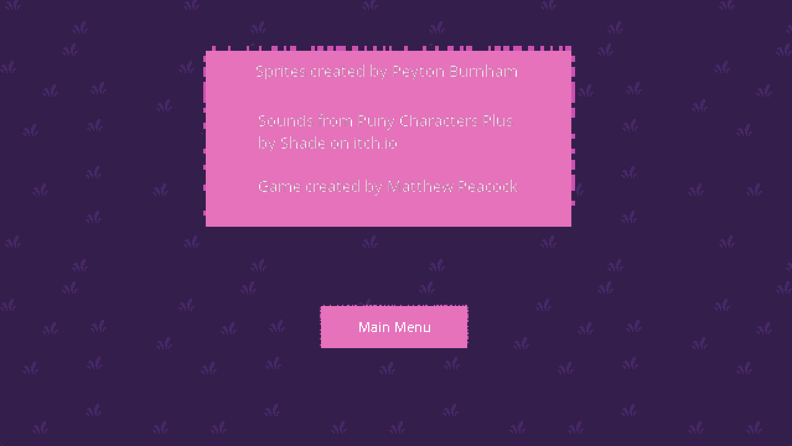
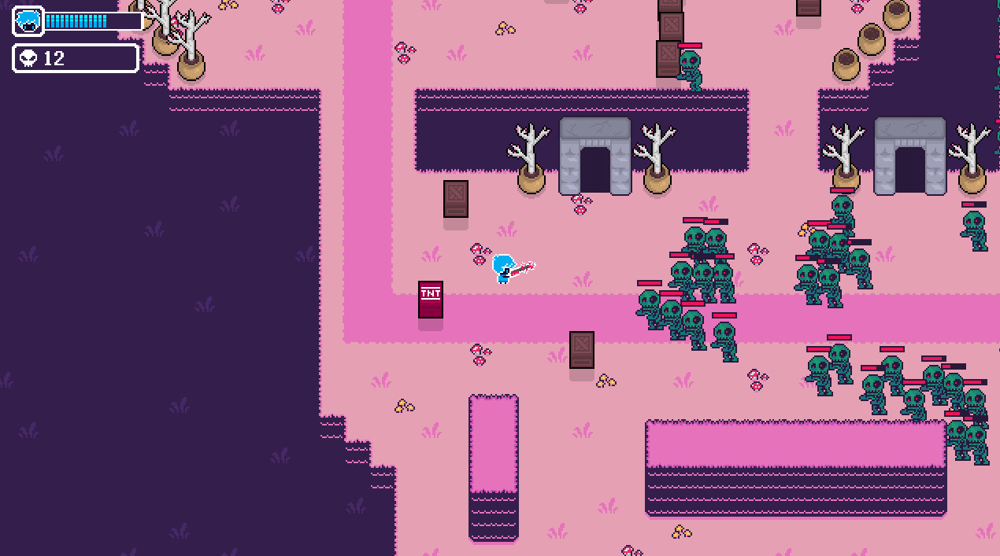
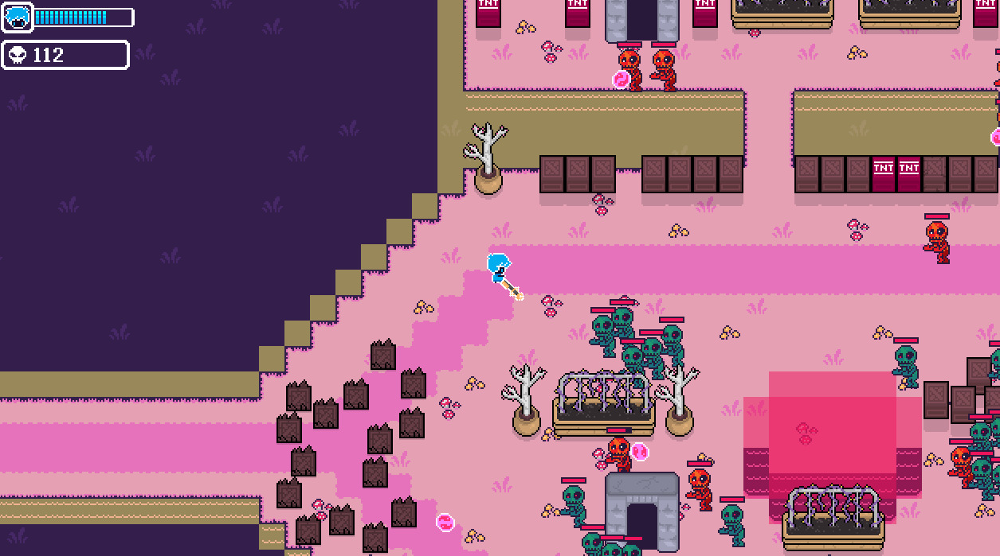
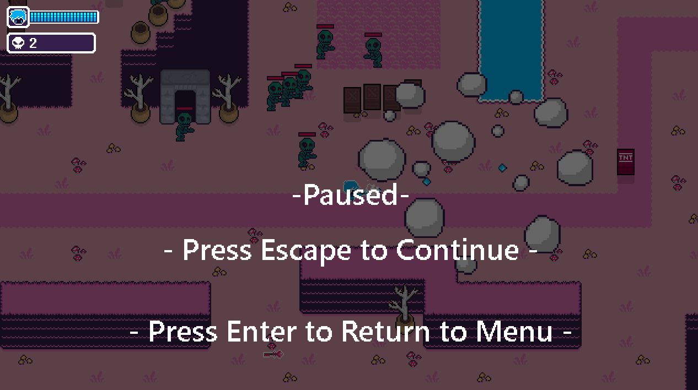
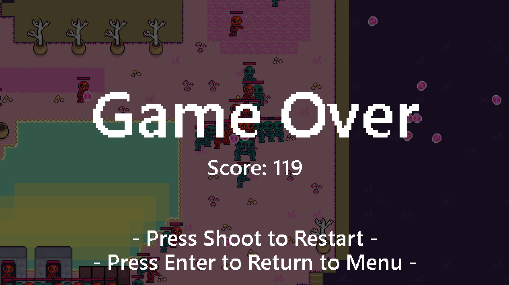
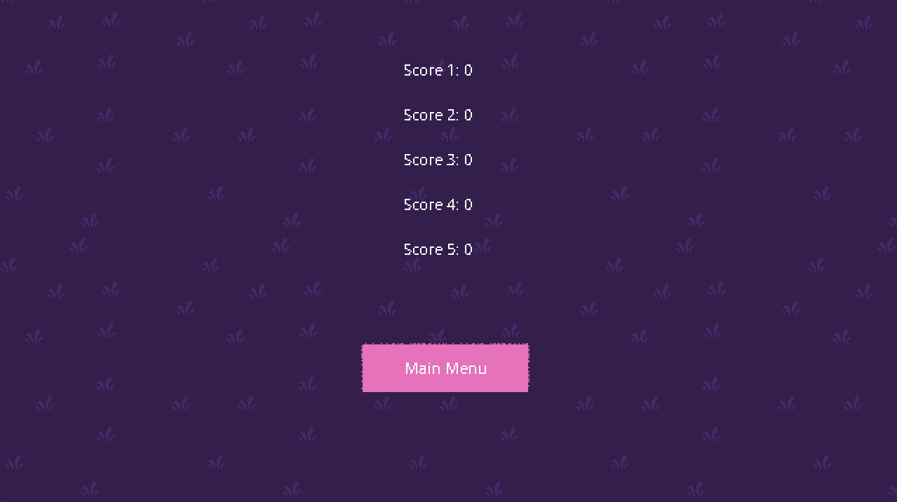

Game Development · 2024
A top-down shooter developed for PC using GameMaker Studio.
About The Game
Undead Survival is a top-down shooter developed for PC using GameMaker Studio.
The player must survive against waves of enemies.
Game Screenshots






